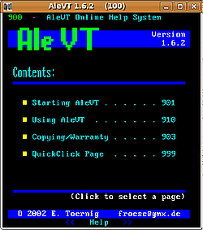

Teletext mit DVB-T
Archivierte Anleitung
Dieser Artikel wurde archiviert, da er - oder Teile daraus - nur noch unter einer älteren Ubuntu-Version nutzbar ist. Diese Anleitung wird vom Wiki-Team weder auf Richtigkeit überprüft noch anderweitig gepflegt. Zusätzlich wurde der Artikel für weitere Änderungen gesperrt.
Zum Verständnis dieses Artikels sind folgende Seiten hilfreich:
Teletext zu nutzen ist unter Ubuntu eher schwierig. Das in den Paketquellen vorhandene AleVT  ist in der vorliegenden Form nur für wenige Karten nutzbar, auch können die "gängigen" Media-Player (Ausnahme VLC) keinen Teletext ausgeben. Kompliziert ist es vor allem, "moderne" DVB-T-Karten für Teletext zu nutzen. Allerdings gibt es die Möglichkeit, eine DVB-T-fähige Version für AleVT zu erstellen, die für v4l-Geräte optimiert ist; die Bedienung ist aber recht umständlich (Kommandozeilen-Anwendung). In diesem Artikel wird ein Skript für die gepatchte Version vorgestellt, mit der Teletext einfach, ggf. sogar über Fernbedienung zu bedienen ist.
ist in der vorliegenden Form nur für wenige Karten nutzbar, auch können die "gängigen" Media-Player (Ausnahme VLC) keinen Teletext ausgeben. Kompliziert ist es vor allem, "moderne" DVB-T-Karten für Teletext zu nutzen. Allerdings gibt es die Möglichkeit, eine DVB-T-fähige Version für AleVT zu erstellen, die für v4l-Geräte optimiert ist; die Bedienung ist aber recht umständlich (Kommandozeilen-Anwendung). In diesem Artikel wird ein Skript für die gepatchte Version vorgestellt, mit der Teletext einfach, ggf. sogar über Fernbedienung zu bedienen ist.
Hinweis:
Unter Ubuntu 12.10 ist eine DVB-T-fähige Version von AleVT (Version 1.7.0) im Paket dvb-apps enthalten, daher ist das hier beschriebene Verfahren nicht mehr notwendig. Die neue AleVT-Version wird, wenn ein DVB-T-Sender wiedergegeben wird, automatisch mit dem passenden Teletext aufgerufen. Das Paket alevt, das auch unter Quantal noch vorhanden ist, liefert mit Version 1.6.2 keine direkte DVB-T-Unterstützung, zudem steht es im Konflikt mit dvb-apps, es kann also nur eines der beiden Pakete verwendet werden.
Installation¶
Folgendes Paket muss installiert [1] werden:
zenity (universe)
 mit apturl
mit apturl
Paketliste zum Kopieren:
sudo apt-get install zenity
sudo aptitude install zenity
Vorbereitung¶
Zunächst muss eine v4l-fähige Version von AleVT erstellt werden. Dazu wird der Quell-Code von repoforge.org  heruntergeladen. Benötigt wird das alevt-1.6.2-1.rf.src.rpm, das zunächst wie ein Archiv, z.B. mit dem Archivmanager, entpackt [2] wird. Darin befindet sich das benötigte tar.gz-Archiv, was wiederum entpackt werden muss. Dann lädt man sich aus dem Forum den DVB-Demux-Patch herunter und kopiert ihn in das alevt-1.6.2.-Hauptverzeichnis. Dort spielt man ihn im Terminal[3] mit
heruntergeladen. Benötigt wird das alevt-1.6.2-1.rf.src.rpm, das zunächst wie ein Archiv, z.B. mit dem Archivmanager, entpackt [2] wird. Darin befindet sich das benötigte tar.gz-Archiv, was wiederum entpackt werden muss. Dann lädt man sich aus dem Forum den DVB-Demux-Patch herunter und kopiert ihn in das alevt-1.6.2.-Hauptverzeichnis. Dort spielt man ihn im Terminal[3] mit
patch -p1 < 4935107-alevt-dvb-demux.patch
ein und ḱompiliert[4] das Programm. Ein ./configure ist nicht nötig. Da das Makefile nicht den aktuellen Konventionen entspricht, muss ggf., um mit checkinstall ein Paket erstellen zu können, zunächst der nicht-standardmäßige Pfad /usr/local/man/ angelegt werden, wo die Manpage abgelegt werden soll.
Hinweis!
Fremdsoftware kann das System gefährden.
Funktionsweise¶
Diese Version von AleVT greift über /dev/vbi (darüber werden die Teletext-Informationen übertragen) auf das Gerät /dev/dvb/adapter0/demux0 zu (dazu muss zunächst ein DVB-T-Sender laufen, AleVT zweigt dann die Informationen ab). Dazu wird der Teletext-PID-Parameter des entsprechenden Senders benötigt, um den Teletext anzeigen zu können. Der Aufruf von AleVT im Terminal erfolgt mit dem Befehl:
alevt -vbi /dev/dvb/adapter0/demux0 -pid xxx
wobei für xxx der PID des gewünschten Senders eingesetzt werden muss. Leider findet sich die Angabe nicht in einer channels.conf; mit Kaffeine kann man sich die Teletext-PIDs im Dialog zur Sendersuche anzeigen lassen.
Alternativ kann auch der Sendername, oder sogar nur die ersten Buchstaben davon verwendet werden, wenn die PID nicht ausfindig gemacht werden kann, für "Eurosport" funktioniert z.B. auch
alevt -vbi /dev/dvb/adapter0/demux0 -progname eu
Skript¶
Zunächst erstellt man in einem Editor[5] eine Textdatei, in der die Daten der Sender aufgelistet sind, Sendername und PID werden durch ein Semikolon getrennt, z.B. für Berlin
BBC World;55 FAB;3079 WDR;247 Südwest BW/RP;263 MDR Fernsehen;104 arte;204 NDR Fernsehen;304 RTL;343 RTL 2;359 Super RTL;439 Vox;551 RRB Brandenburg;1504 RRB Berlin;1204 Phoenix;1304 Das Erste;1404 Eins Extra;1404 ZDF;551 info;551 3sat;567 doku;551 KiKa;599 Kabel 1;167 N24;231 Pro Sieben;311 Sat.1;391 9 Live;279 Eurosport;583 DSF;135 VIVA plus;535
Diese wird unter ~/TeletextPIDS.lst abgespeichert
Dann das Skript herunterladen, unter ~/TeletextDVB.sh abspeichern und ausführbar machen [6]
1 2 3 4 5 6 7 8 9 10 11 12 13 14 15 16 17 18 19 20 21 | #!/bin/bash ## Autor Heinrich Schwietering (2009) ## Skript, um eine dvb-t-fähige Version von AleVT aufzurufen MCD=/usr/local/bin/alevt zenity --help > /dev/null || { echo "Fehler: Du benötigst \"zenity\" um dieses Skript nutzen zu können." && exit 1 ; } test -e $MCD || { zenity --error --text "Fehler: Du benötigst \"aleVT\" mit dvb-Unterstützung um dieses Skript nutzen zu können!" && exit 1 ; } test ! -e ~/TeletextPIDS.lst && zenity --error --text "~/TeletextPIDS.lst wurde nicht gefunden" && exit 1 SENDER=`cat ~/TeletextPIDS.lst | cut -d ";" -f 1 | zenity --list --title "Bitte Sender auswählen" --column "Sender:"` || exit 0 echo `cat ~/TeletextPIDS.lst | grep "$SENDER;****"` &> /tmp/SenderPID PID=`cat /tmp/SenderPID | cut -d ";" -f 2 ` && rm /tmp/SenderPID test "$SENDER" || { zenity --error --text "Es wurde kein Sender ausgewählt." && exit 1 ; } $MCD -vbi /dev/dvb/adapter0/demux0 -pid $PID END=`zenity --entry --title="Programmwechsel?" --entry-text="Nein" --text="Soll das Teletext-Programm bendet werden?"` if [ "$END" = "Ja" ]; then echo "killall $MCD" && exit 1 fi if [ "$END" != "Ja" ]; then ~/TeletextDVB.sh && exit 1 fi |
Wer wie im "richtigen" Fernsehen, immer mit Startseite 100 beginnen möchte, trägt in einem Editor [4] -parent 100 am Ende der Zeile
$MCD -vbi /dev/dvb/adapter0/demux0 -pid $PID
ein. Auch die Angaben für den Speicherort des Skriptes und der Senderliste müssen ggf. an die eigenen Bedürfnisse angepasst werden. Wenn auch die "normale" Version von AleVT installiert ist, bei MSC= unbedingt auf den richtigen Pfad zur gepatchten Version achten!

Benutzung¶
Das Skript im Terminal aufrufen; es wird der Sender abgefragt, und umgehend der kleine Teletext-Browser geöffnet. Komfortabler ist es, sich im Startmenü [7] einen Eintrag zu erstellen, und das Skript so zu starten [8].
Wenn das Fenster geschlossen wird, erfolgt eine Abfrage, ob der Sender gewechselt werden soll. Wenn nicht Ja angegeben wird, beendet sich das Programm, ansonsten erscheint wieder der Senderauswahl-Dialog. Dabei kann nur der Teletext eines gerade laufenden (oder zuletzt gelaufenen) Senders aufgerufen werden; gewechselt werden kann allerdings innerhalb der "Senderfamilie", die auf einem gemeinsamen dvb-Kanal ausgestrahlt werden. Die Bedienung von AleVT selbst wird im Teletext-Browser ab Seite 900 in englischer Sprache erläutert. Die Steuerung kann auch über eine Fernbedienung mit Lirc über die Maus erfolgen.
Probleme¶
Bei einigen TV-Karten lässt sich das Programm nicht beenden, wenn der entsprechende Sender nicht mehr wiedergegeben wird. Da hilft es nur, Alevt vor Abschalten des Players zu beenden, oder den Sender nochmals zu starten.
Inzwischen ist die "offizielle" Version 1.6.2 in den Paketquellen vorhanden; um ein Überschreiben eines eigenen v4l-fähigen Pakets zu verhindern, entweder beim Paketerstellen eine höhere Versionsnummer vergeben, oder in der Paketverwaltung die installierte Version sperren.
Alternativen¶
VLC kann mit dem Paket vlc-plugin-zvbi für DVB-T und DVB-C Teletext im Hauptfenster anzeigen, auch als transparente Version über dem Fernsehbild.
Das Programm mtt stammt aus dem xawtv-Projekt; es ähnelt AleVT, ist vom selben Entwickler und stellt noch ein paar mehr Funktionen zur Verfügung.
- Erstellt mit Inyoka
-
 2004 – 2017 ubuntuusers.de • Einige Rechte vorbehalten
2004 – 2017 ubuntuusers.de • Einige Rechte vorbehalten
Lizenz • Kontakt • Datenschutz • Impressum • Serverstatus -
Serverhousing gespendet von